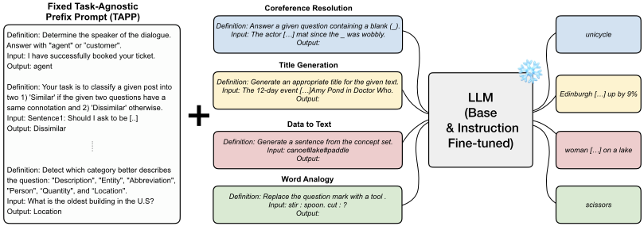
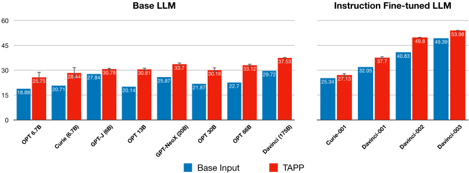
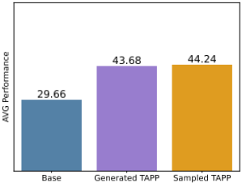
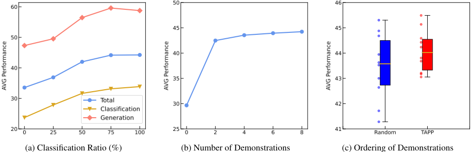
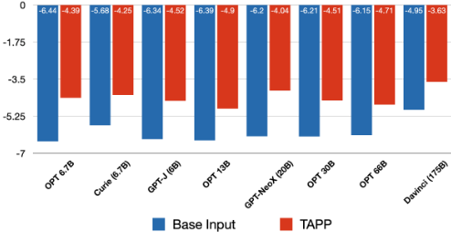
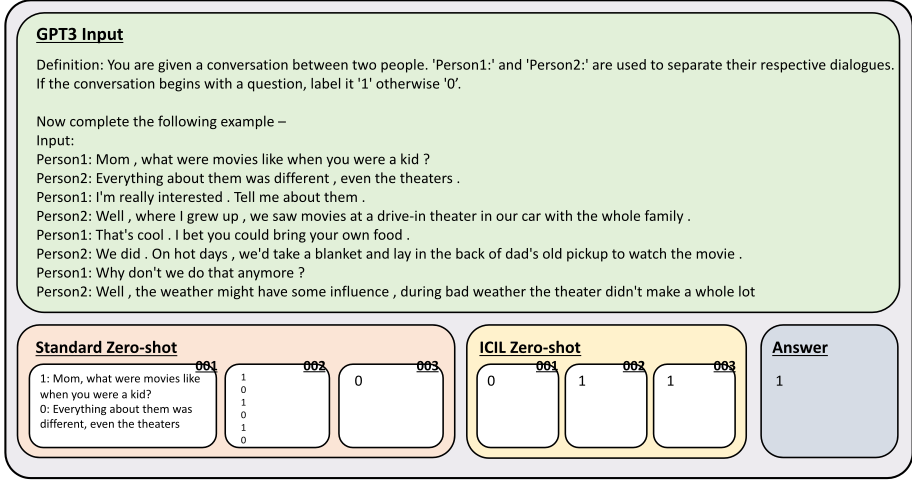

Investigating the Effectiveness of Task-Agnostic Prefix Prompt for Instruction Following
任务无关前缀提示（Task-Agnostic Prefix Prompt）对指令遵循有效性的研究
简介
论文研究能否在不微调、不访问模型权重的前提下，仅在推理阶段通过一个固定前缀提示提升 LLM 的指令遵循能力。作者提出 TAPP：用简单启发式（选取 instruction 中含明确答案选项的分类任务示范、避免示范间答案选项重叠、按答案选项数量排序）构建一组固定的跨任务示范（instruction+input+output），无论目标任务是什么都统一前置到输入之前。在 SUPERNI 119 个任务上，TAPP 使 base LLM 平均提升 34.58%、instruction-tuned 模型平均提升 12.26%，6B 的 GPT-J 加 TAPP 超过 175B 的 GPT-3 Davinci，text-davinci-003 再提升 9.3%，且可与 few-shot ICL 叠加。机制分析表明关键在于示范中 instruction 答案选项与输出标签的对应关系，输入分布无关紧要，这与'需检索与目标任务相似示范'的已有结论相反。对团队而言，这是一种低成本、可复用的提示资产组织思路，但实验基于较旧模型，需在当前模型上重新验证。
问题
已有工作主要依赖 instruction tuning、RLHF 等微调手段提升 LLM 的指令遵循能力，需要多次反向传播并访问模型权重，难以用于专有模型；而 few-shot in-context learning 又要求为每个目标任务人工准备示范。论文探究：能否仅靠推理阶段一个固定的、与目标任务无关的前缀提示（TAPP）提升指令遵循能力，并解释其生效机制。
方法
提出 TAPP（Task-Agnostic Prefix Prompt）：从任务池（SUPERNI 的 756 个英文训练任务）按简单启发式选取 K=8 条跨任务示范（每条为 instruction+input+output 拼接，截断至 256 token），规则包括只选 instruction 中含明确答案选项的分类任务、避免示范间答案选项重叠、按答案选项数量排序以降低方差；将这一固定示范集统一前置到任意目标任务输入前，示范任务与评测任务严格 held-out 以保证 zero-shot。TAPP 不需要任务类别信息、目标任务输出分布或检索工具；示范集也可由 ChatGPT 按同样规则自动生成。论文还通过组件破坏实验（分别破坏 instruction/input/output 分布）与注意力分析验证机制假设。
关键结果
SUPERNI 119 个任务上：base LLM 平均提升 34.58%，instruction-tuned 模型平均提升 12.26%；其中 OPT-13B 提升超过 50%
6B 的 GPT-J 加 TAPP 超过 30 倍大的 175B GPT-3 Davinci 不加 TAPP 的表现；TAPP 加在未微调 davinci 上的收益可超过 instruction tuning 带来的收益（对比 text-davinci-001 的 base input）
对最强指令模型 text-davinci-003 仍提升 9.3%；text-davinci-002 加 TAPP 超过 RLHF 调优的 text-davinci-003 的 base input
TAPP 与任务特定前缀提示相当或更优：Nearest PP（SimCSE 检索相似示范）未超过 TAPP；Output PP 在分类任务上优于 TAPP（36.83 vs 43.67）但在生成任务上显著落后（51.93 vs 24.98）
4-shot TAPP + 4-shot Few-shot ICL 得 60.21，接近 8-shot Few-shot ICL 的 61.71
破坏示范的输入分布几乎不损害性能；但破坏 instruction 分布后仅 31.18（base input 为 29.67），在破坏的 instruction 中补一句含答案选项的描述后回升至 38.92
分类任务示范占比越高平均性能越好，且对生成类目标任务同样有效；仅 2 条示范已显著提升；按答案选项数量排序可降低方差并改善最差情况
ChatGPT 生成的示范与从 SUPERNI 采样的示范性能相当，说明增益来自构建规则与格式而非采样过程
注意力分析：TAPP 使首个输出 token 对目标 instruction 的注意力平均提升 10.39%（0.6172 → 0.6758）；INSTRUCTSCORE 评测下所有模型均因 TAPP 提升
创新点
与依赖微调（instruction tuning/RLHF）或任务特定提示（few-shot 示范、Z-ICL 等检索相似示范）的已有工作不同，TAPP 是一个与目标任务完全无关的固定前缀提示，无需梯度更新、任务信息、输出分布或检索工具，即可同时提升 base 与 instruction-tuned 模型，且效果与 instruction fine-tuning 和 few-shot ICL 正交叠加。此外给出与'检索与目标任务相似的示范更关键'（Rubin et al. 2021; Liu et al. 2022）相反的发现：含明确答案选项的分类任务示范最有效，甚至示范的输入分布被破坏也不影响效果。
团队参考意义
相关度级别：high
命中能力域：3.2 提示工程 | 3.1 上下文工程与记忆
理由：直接命中 3.2 提示工程：TAPP 本身就是一个用启发式规则构建、可跨任务复用的固定提示资产，论文系统研究了 in-context 示范的选择、排序、数量与组件重要性，属于提示技术与模式的核心内容；同时涉及 3.1 上下文工程：固定前缀的组织方式、序列长度约束下的示范取舍、以及利用固定前缀缓存控制推理成本，都是上下文组织的实际问题。论文给出的可操作结论（instruction 中显式给出答案选项的对应关系是关键、输入分布不重要、检索相似示范并非必要、4-shot TAPP 可替代部分任务特定示范）可直接指导团队的提示模板设计与上下文组织。需注意实验模型为 GPT-3/OPT/GPT-NeoX/GPT-J 等 2022 年前后的模型，且在 FLAN-T5、OPT-IML 上反而退化，结论迁移到团队当前使用的模型前需重新验证。
建议动作：作为方法参考存档
中文全文
arXiv:2302.14691v2 [cs.CL] 2023年12月24日
Investigating the Effectiveness of Task-Agnostic Prefix Prompt for Instruction Following
Seonghyeon Ye 1 * Hyeonbin Hwang 1 Sohee Yang 1,2
Hyeongu Yun 3 Yireun Kim 3 Minjoon Seo 1 1 KAIST 2 UCL 3 LG AI Research seonghyeon.ye@kaist.ac.kr
多个跨任务示例，其中每个示例是某个任务的指令、输入和输出实例的拼接。请注意，任务无关前缀提示（TAPP）与典型的任务特定提示不同之处在于，它是一个固定的前缀提示，无论目标任务是什么都会被前置，以实现零样本泛化。
我们首先观察到，TAPP 能显著提升各种未经指令遵循微调的基础大语言模型（LLM）的指令遵循性能。值得注意的是，即使是带有 TAPP 的较小 LLM，其表现也优于不带 TAPP 的大得多的语言模型，例如带有 TAPP 的 6B 规模 GPT-J 胜过了不带 TAPP 的规模大 30 倍的 175B 规模 GPT-3 Davinci。其次，我们表明，在经过指令微调的 LLM 之上应用 TAPP 同样能提升性能，将最强的指令遵循 LLM 之一（text-davinci-003）的性能提升了 9.3%。这表明 TAPP 在推理过程中的效果与指令微调的效果是互补的。此外，我们证明，将 TAPP 前置到目标任务示例之前也能提升性能，这意味着 TAPP 还能在推理过程中增强少样本上下文学习（in-context learning）。
我们的分析表明，当前缀提示由分类任务的示例组成、且指令中包含明确的答案选项时（例如图 1 中 'agent' 或 'customer' 的表述），TAPP 的表现最佳。即使目标任务是生成任务，这一点依然成立，这与以往研究的发现形成对比——以往研究认为检索一组与目标任务相似的提示至关重要（Rubin, Herzig, and Berant 2021; Liu et al. 2022）。我们还观察到，即使 TAPP 各示例的输入分布遭到破坏，性能也不会显著下降。基于这两点观察，我们假设在 TAPP 的推理过程中，LLM 会学习指令中包含的答案选项与 TAPP 各示例输出之间的对应关系。基于这一假设，我们认为 TAPP 的作用在于帮助 LLM 聚焦于目标指令，从而更好地估计目标任务的输出分布。这也意味着，这种能力在基础 LLM 和经过指令微调的 LLM 中似乎都未被充分激活，我们将进一步的探究留作未来工作。
Abstract
本文中，我们提出了一个发现：在输入前添加任务无关前缀提示（Task-Agnostic Prefix Prompt, TAPP），能够提升多种大语言模型（Large Language Model, LLM）在推理阶段的指令遵循能力。TAPP 与 LLM 的规范提示（canonical prompt）不同之处在于，它是一个固定提示，无论目标任务为何，都会被添加到每个输入的开头，以实现零样本泛化。我们观察到，基础 LLM（即未经指令遵循微调的模型）和经过指令微调的模型都能从 TAPP 中获益，平均分别提升 34.58% 和 12.26%。这意味着，LLM 的指令遵循能力可以在推理阶段通过一个用简单启发式方法构建的固定提示来加以提升。我们假设，TAPP 通过使语言模型在推理过程中更加关注目标任务的指令，帮助其更好地估计输出分布。换言之，这种能力不仅在基础 LLM 中，而且在许多经过指令微调的 LLM 中，似乎都未被充分激活¹。
1 Introduction
大语言模型（LLM）已通过指令微调或基于人类反馈的强化学习（RLHF）等方法展现出遵循用户指令的能力（Sanh et al. 2021; Wei et al. 2021; Wang et al. 2022c; Ouyang et al. 2022; Min et al. 2022a; Chung et al. 2022; Ye et al. 2022; Bai et al. 2022; Askell et al. 2021）。然而，以往的工作主要聚焦于基于微调的方法来增强 LLM 的指令遵循能力，即让模型在带有指令的多种任务上进行微调，这需要多次反向传播过程，并且必须能够访问模型权重，从而限制了此类方法对专有模型的适用性。
在本文中，我们提出并分析了如下发现：在推理阶段前置一个由简单启发式方法确定的任务无关前缀提示（Task-Agnostic Prefix Prompt, TAPP），能够显著增强 LLM 在多种任务上的指令遵循能力，且对开源模型和专有模型均有效（Zhang et al. 2022; Brown et al. 2020; Wang and Komatsuzaki 2021; Black et al. 2022）。具体而言，TAPP 由
* 本工作为作者在 LG AI Research 实习期间完成。
1 所有实验均可通过 github.com/seonghyeonye/TAPP 复现。

2 Related Works
推理时任务适应 上下文学习（in-context learning）是推理阶段最广为人知的无梯度任务适应方法之一。以自回归方式预测下一个词元而预训练的语言模型，在仅以少量任务特定训练样本为条件且不进行梯度更新的情况下，即具备适应目标任务的能力（Brown et al. 2020; Chowdhery et al. 2022; Aky¨ urek et al. 2022; von Oswald et al. 2022; Garg et al. 2022; Dai et al. 2022）。然而，少样本上下文学习需要获取每个目标任务的示例（demonstrations），这意味着用户必须亲自花费精力为每个任务生成这些示例。为解决这一问题，Lyu et al. (2022) 提出了零样本上下文学习方法（ZICL），该方法从外部语料库中检索相关句子并分配随机标签，从而为分类目标任务构建示例。然而，Z-ICL 仅适用于单句分类任务以及答案选项仅为单个词的任务。此外，Z-ICL 假设任务的输出分布是给定的。相比之下，我们的工作在不对下游任务类型施加任何限制、也无需有关任务的额外信息的情况下，考察任务无关前缀提示的效果，这使得该方法甚至可以应用于实时场景。
指令遵循大语言模型（LLM） 近期研究表明，基于微调的指令学习，例如指令微调（instruction tuning）或基于人类反馈的强化学习（RLHF），能够提升 LLM 遵循指令或与人类偏好对齐的能力（Sanh et al. 2021; Wei et al. 2021; Wang et al. 2022c; Chung et al. 2022; Min et al. 2022a; Ye et al. 2022; Ouyang et al. 2022; Bai et al. 2022; OpenAI 2022）。这些工作已经证明，通过扩大基座模型的规模，或在更加多样化的任务集合上进行训练，可以最大化指令微调的效果。然而，LLM 的指令遵循能力究竟是通过指令微调新获得的，还是在预训练期间便已获得，这一问题尚未得到充分探索。Wang et al. (2022b); Honovich et al. (2022) 表明，由 LLM 自身生成的、包含噪声样本的下游任务实际上可以作为指令微调的良好训练样本，这意味着 LLM 已经在一定程度上理解了指令。我们进一步扩展了基座 LLM 已具备遵循指令能力这一假设：我们证明，无论目标任务为何，在不执行任何反向传播的情况下应用 TAPP，即在不进行任何梯度更新的情况下直接使用基座模型检查点，都能提升目标下游任务的性能。
3 Task-Agnostic Prefix Prompt
TAPP 由跨任务示例（demonstrations）组成，其中每个示例是指令、输入和输出实例的拼接，如图 1 所示。确切的提示内容见附录 H。在本节中，我们解释了用于构建 TAPP 的规则。此外，我们还阐述了在 LLM 推理过程中应用 TAPP 以实现零样本任务泛化的优势。
3.1 TAPP Construction
我们从总共包含 N 个任务的任务池中选取 K 个任务作为 TAPP 的示例，其中每个任务实例由一条指令、一个输入和一个输出组成 2。我们采用一些简单的启发式规则，首先对任务集合进行过滤，然后从每个过滤后的任务集合中随机采样一个实例，最后采样 K 个全部对应不同任务的实例。规则如下：
2 除非另有说明，我们默认设置 K = 8。

考虑到最大序列长度，将示例（demonstration）最多限制为 256 个 token 3。
我们在第 5 节中对这些启发式规则进行了详细的分析和消融实验，以论证我们规则设计的合理性。
3.2 TAPP for Zero-Shot Task Generalization
在从满足准则的任务集合中随机采样 K 个任务并按该准则对其进行排序后，我们构建一个固定的示例集合 M = [ M 1 , M 2 , ..., M K ]（TAPP），并将其前置到目标任务 t 的指令（ I t ）与第 i 个输入实例（ x ti ）拼接而成的序列之前。由 θ 参数化的模型所产生的响应（ y ti ）按如下方式计算：
其中，M 不随目标任务 t 而变化，K 为示例的数量。我们确保构成 TAPP 示例集合的 K 个任务被严格地从目标任务 T 中排除（heldout），以便衡量 TAPP 对零样本任务泛化的效果。
值得注意的是，TAPP 不同于通常随目标任务不同而变化的常规任务特定提示（task-specific prompt）。TAPP 是一个固定的前缀提示，可以不受任何限制地前置到任何目标任务上，如第 2 节所述，它易于复现且具有广泛的适用性。
此外，与少样本提示（few-shot prompting）或 Lyu 等人（2022）的方法等任务特定提示不同，TAPP 在推理时不需要任何额外信息，例如任务类别信息或目标任务的输出分布。
3 由于我们主要在 175B 规模的 GPT-3 上进行实验，因此我们将默认的最大输入序列设置为 2048。
4.1 Experimental Setup
我们利用 SUPER-NATURALINSTRUCTIONS（SUPERNI）基准测试（benchmark）(Wang et al. 2022c) 的英文训练任务作为任务池来构建 TAPP 的演示，该基准测试共包含 756 个任务。为了评估 TAPP 的有效性，我们使用 SUPERNI 的留出任务进行测试，其涵盖 12 个不同类别的 119 个任务，包括自由形式生成、词汇关系推理以及各种分类任务。我们选择 SUPERNI 作为评估基准测试，因为它提供了复杂程度各异的多样化任务集合。每个任务包含 100 个实例，我们排除了超过最大序列长度的实例，最终共有 11,802 个实例。我们按照 Wang et al. (2022c) 所使用的指标，为每个任务采用不同的评估指标，例如对分类或单词预测任务使用 Exact Match，对自由形式生成任务使用 ROUGE-L。我们在附录 A 中给出了 12 个评估任务类别的列表，并在附录 E 中提供了更详细的评估设置。
模型类型 我们评估了 4 个具有不同模型规模的大语言模型（LLM）：1) GPT-3 (Brown et al. 2020)、2) OPT (Zhang et al. 2022)、3) GPT-NeoX (Black et al. 2022) 以及 4) GPT-J (Wang and Komatsuzaki 2021) 4。对于 GPT-3，我们不仅评估了基础 LLM，还评估了经过微调以遵循指令、并通过强化学习与人类偏好对齐的 LLM (Ouyang et al. 2022)。我们评估了规模为 6.7B 和 175B 的 GPT-3 模型的性能。对于 OPT，我们评估了参数量为 6.7
4.2 Results
多种基础 LLM 均能从 TAPP 中获益。如图 2 左侧所示，任务无关前缀提示（Task-Agnostic Prefix Prompt, TAPP）在所有模型规模上都能持续提升基础 LLM（即未使用指令进行微调的模型）的性能，使 OPT-13B 的性能提升超过 50%。借助这一固定提示，较小的模型能够超越未使用 TAPP 的规模大得多的模型（Base Input）。具体而言，使用 TAPP 的 6B 规模 GPT-J 模型超越了规模大 30 倍、未使用 TAPP 的 175B 规模 GPT-3 模型。这表明 TAPP 无需微调或反向传播即可提升基础 LLM 遵循指令的能力。此外，通过比较将 TAPP 应用于未经指令微调的 GPT-3 模型（davinci）与经过指令微调的 GPT-3 模型（text-davinci-001）在 base input 设置下的性能，我们观察到推理阶段由 TAPP 带来的增益可以超过指令微调带来的增益。
TAPP 带来的增益与指令微调是互补的。如图 2 右侧所示，我们观察到 TAPP 能够提升经过指令微调或基于人类反馈的强化学习（RLHF）微调的 LLM 的性能，对于参数量超过 100B 的模型尤为明显。这意味着对于较大的模型，仅靠指令微调有时可能并不足够，而在输入前附加固定前缀提示能够以正交的方式提升指令遵循能力。特别地，我们观察到 text-davinci-002（175B）的性能显著提升，超越了在 base input 设置下经 RLHF 微调的模型 text-davinci-003。同时，我们证明最强大的模型（text-davinci-003）也能从 TAPP 中获得 9.3% 的提升，取得最佳性能。关于更多样化的指令微调模型的详细分析，我们留作未来工作。
TAPP 的输入损坏不会对性能造成太大损害。在图 3 中，我们观察到，对 TAPP 而言，破坏每个示例（demonstration）的输入实例分布并不会对性能造成太大损害，这与 Min et al. (2022b) 在少样本上下文学习（few-shot in-context learning）中的观察结果类似。与 Min et al. (2022b) 中对输入-输出对应关系进行扰动不同，我们直接对输入分布本身进行扰动，这是一种存在更多损坏的设置，如图 3 顶部所示。遵循 Min et al. (2022b) 的做法，我们使用 CC-News (Hamborg et al. 2017) 作为外部语料库，用与原始输入实例长度相近的随机句子替换真实输入实例。如图 3 底部所示，在大多数模型规模下，破坏每个示例的输入实例分布并不会对性能造成太大损害。这与先前工作的观察结果一致，即大语言模型（LLM）并未充分利用提供给它们的所有信息 (Min et al. 2022b; Webson and Pavlick 2021; Madaan and Yazdanbakhsh 2022; Wang et al. 2022a)。有趣的是，在少样本上下文学习中，破坏输入分布本身会导致显著的性能下降，而与之不同，我们证明了对于 TAPP 而言，不仅输入-输出对应关系无关紧要，输入实例分布也几乎无关紧要。
5 我们没有在 GPT-3.5 (OpenAI 2022) 或 GPT-4 (OpenAI 2023) 上进行评估，因为诸如模型规模或架构等模型细节尚不清楚。
| Category | Output | Task | AVG | |
|---|---|---|---|---|
| Base (No PP) TAPP Nearest PP Category PP | ✗ ✗ ✗ | ✗ ✗ ✗ ✗ | ✗ ✗ ✗ ✗ | 29.66 44.24 44.16 42.43 |
| ✓ | ||||
| Output PP | ✗ | ✓ | ✗ | 34.34 |
| Few-shot ICL + TAPP | ✓ ✓ | ✓ ✓ | ✓ ✓ | 56.65 60.21 |
| | Category | Output | Task | AVG |
5 Analysis
In this section, we provide additional experiments and investigate the factors that make TAPP effective. We evaluate on base GPT-3 175B checkpoint (davinci) and evaluate on a single task per task category, resulting in a total of 12 tasks due to inference cost issues 6 .
5.1 Additional Experiments
与任务特定前缀提示的比较 我们将 TAPP 的性能与其他任务特定的前缀提示进行比较，即前缀提示依赖于目标任务而非固定不变。我们与三种方法进行比较：Nearest PP、Category PP 和 Output PP。首先，对于 Nearest PP，我们使用 SimCSE (Gao, Yao, and Chen 2021) 搜索工具，从 SUPERNI 的训练任务中为每个目标任务检索 topK 个相似实例来构建前缀提示，类似于 Lyu et al. (2022) 的设置 7。其次，对于 Category PP，我们假设在推理时提供了任务类别信息，从 SUPERNI 基准测试的评估任务中、属于同一任务类别（例如问答）的任务（但排除目标任务本身）中随机采样示例来构建前缀提示。第三，对于 Output PP，我们遵循 Min et al. (2022b) 的输入破坏设置，利用目标任务的少样本示例的输出标签，同时破坏每个示例的输入分布。该设置相当于仅通过示例提供输出分布。
6 我们为每个任务类别选择一个在 davinci、text-davinci-001、002、003 各模型之间下界与上界性能差异显著的任务，以便更清楚地观察趋势。
7 请注意，Lyu et al. (2022) 的原始设置仅适用于单句分类任务以及答案选项为单个词的任务。因此，该方法无法与 SUPERNI 这类包含多样化任务集合的基准测试直接比较。
![Figure 3: (Top) Example of Input-corrupted TAPP, where we corrupt the input instance distribution of the demonstrations. (Bottom) Comparison with Base Input, TAPP, and Input-corrupted TAPP. For most of the models, input distribution corruption does not harm the performance much. We report the mean score of three random seeds for different demonstration sets for TAPP. We report a result of a single seed for 175B-sized models due to inference costs. We provide the full demonstration sets in Appendix I.](assets/a455/figures/fig_3.png)
表 1 中的结果表明，TAPP 与其他任务特定的前缀提示相当或更优。首先，我们发现 Nearest PP 并未超越 TAPP。这表明使用外部搜索工具为每个目标任务查找相似示例可能帮助不大。其次，Category PP 的表现略逊于 TAPP，因为构建与目标任务相似的跨任务示例有时会导致复制示例的输出，类似于 Lyu et al. (2022) 中观察到的复制效应。最后，我们观察到 Output PP 的表现显著逊于 TAPP。尽管 Output PP 在分类任务上优于 TAPP（36.83 vs 43.67），但在生成任务上显著逊于 TAPP（51.93 vs 24.98）。我们推测这是因为，虽然每个示例的输入与输出之间的对应关系对分类任务而言不那么关键（Min et al. 2022b），但该对应关系对生成任务十分重要，若对应关系不匹配，则会给 LLM 带来干扰信号（Shi et al. 2023）。通过这些结果，我们观察到 TAPP 在不需要任何额外信息或搜索工具的情况下，表现出与任务特定前缀提示相当或更好的性能。
与少样本上下文学习（few-shot in-context learning）的正交性 从图2的结果中，我们观察到TAPP能够提升经过指令微调的大语言模型（LLM）的性能。在此，我们研究TAPP是否也能提升少样本上下文学习；该设定假设除了类别和输出信息之外，目标任务的信息还通过目标任务的示例（demonstrations）来提供。我们对Few-shot ICL使用4-shot少样本示例，并为TAPP前置4个示例，以使输入能够适应最大序列长度。如表1所示，将TAPP前置到Few-shot ICL能够提升性能，这意味着TAPP也可以通过固定的前缀提示（prefix prompt）来增强少样本上下文学习。此外，我们观察到，在4-shot Few-shot ICL设置中前置4-shot TAPP，大幅缩小了与不带TAPP的8-shot Few-shot ICL之间的性能差距（60.21 vs 61.71）。这表明了TAPP在实时LLM服务场景中的优势：用户既可以省去为每个任务手动构建数量多一倍的任务特定示例的工作，又只需将TAPP前置到输入中即可获得相近的性能。


| Inst. | Input | Output | AVG | |
|---|---|---|---|---|
| TAPP | ✓ | ✓ | ✓ | 44.24 |
| Random Inst. | ✗ | ✓ | ✓ | 31.18 |
| Random Input | ✓ | ✗ | ✓ | 44.27 |
| Random Output | ✓ | ✓ | ✗ | 38.3 |
| | Inst. | Input | Output | AVG |
与机器生成前缀提示的比较 我们探究TAPP对机器生成的示例是否同样有效，而非从任务池（SUPERNI）中采样获取示例。我们通过指定用于构建TAPP示例集的规则，使用ChatGPT（OpenAI 2022）来生成示例。如图4所示，TAPP对机器生成的示例同样有效，其性能与使用来自SUPERNI示例的TAPP相当，并显著优于不使用任何前缀提示的结果。这一发现表明，即使没有从由多样化指令构成的基准测试（benchmark）中进行采样的过程，TAPP依然有效，这说明性能提升并非来自通过采样构建示例，而是来自TAPP的构建规则和格式。我们在附录G中提供了一个机器生成示例集的例子。
5.2 Ablation Studies
示例的指令与输出分布至关重要。我们通过破坏各组成部分的分布——即指令、输入和输出实例——进一步分析了TAPP中示例各组成部分的有效性。对于指令破坏，我们使用来自外部语料库的随机序列替换真实序列，这与第4.2节中讨论的输入分布破坏方式类似。对于输出破坏，我们遵循Min et al. (2022b)的做法，使用随机英文单词替换真实标签。结果如表2所示。与图3中输入分布破坏的结果不同，破坏每个示例的指令分布或输出实例分布会显著损害性能。特别是，破坏指令分布后，与不使用任何前缀提示的基础输入相比几乎没有提升（31.18 vs 29.67）。这表明，与输入实例不同，指令和输出实例的分布会显著影响TAPP的性能。
使用分类任务构建示例集十分重要。我们通过改变构成示例集的分类任务所占的比例，分析了TAPP中仅从分类任务构建示例集这一启发式方法。如图5a所示，随着分类任务比例的增加，平均性能也随之提升。有趣的是，我们观察到使用分类任务构建示例集还能提升生成式（非分类）目标任务的表现。这一发现与少样本上下文学习（few-shot in-context learning）设置形成对比，在后者的设置中，检索与目标查询相似的示例能够提升少样本性能（Rubin, Herzig, and Berant 2021; Liu et al. 2021）8。
增加示例数量能够提升性能。我们研究了构成TAPP的示例数量所带来的影响。结果如图5b所示。正如预期，随着示例数量的增加，平均性能得到提升。值得注意的是，即使仅有2个示例，指令遵循能力也显著提升，这意味着仅使用少量前缀提示仍能提升大语言模型（LLM）的性能。这也表明，对于推理过程中高效计算至关重要的场景，减少构成TAPP的示例数量可能是一种最优方案，因为性能下降并不严重。
8 需要注意的是，图5a中0%的分类比例对应于仅从生成式（非分类）任务构建示例集。
| Classification | Generation | Total | |
|---|---|---|---|
| Overlap | 35.14 | 52.32 | 42.3 |
| No Overlap | 33.86 | 58.77 | 44.24 |
| | Classification | Generation | Total |
按答案选项数量对示例进行排序可降低方差。为了考察示例集不同排序方式的影响，我们将基于答案选项数量构成TAPP的示例排序与随机排序进行比较。图5c展示了通过10个不同随机种子采样得到的10个不同示例集的结果。尽管两种设置下的平均性能没有显著差异，但我们观察到，采用基于答案选项数量的排序能够降低方差，并提升最差情况下的准确率。
示例之间的答案选项重叠会损害性能。我们分析了示例之间答案选项重叠的影响，这是构建示例集所采用的规则之一。我们将用于TAPP的示例集与所有示例均具有相同答案选项的示例集进行比较。结果如表3所示。我们观察到，存在答案选项重叠的示例集在平均性能上不及无重叠的示例集，尤其是在生成任务上。我们发现，存在答案选项重叠的示例集往往会使模型在长文本生成时生成较短的序列，或通过复制示例集中某个标签来预测输出，从而导致性能不佳。
6 Discussion
从前几节中，我们观察到TAPP能显著提升基座模型和经过指令微调的大语言模型（LLM）的性能。此外，我们已证明破坏输入分布并不会对性能造成太大损害，并分析了从分类任务构建示例集对性能提升至关重要。在本节中，我们基于前几节的发现提出TAPP的作用。
为什么从分类任务构建示例集很重要？图5a表明，使用分类任务构建示例集对TAPP而言十分重要。那么，分类任务与生成（非分类）任务之间有什么区别？由于我们构建示例的启发式规则之一是仅考虑指令中包含答案选项的分类任务（例如图1中的'agent'或'customer'），这些示例对输出分布含有更明确的线索。我们假设，在推理过程中，LLM会从示例中学习指令中的答案选项（例如：确定对话的说话者，'agent'还是'customer'。）与标签（例如agent）之间的对应关系。尤其是，由于在分类任务中标签词出现在指令里，LLM很容易利用这种关系。我们观察到，在表2中仅为指令被破坏的示例添加一句包含答案选项的句子，就能使TAPP的性能得到提升（31.18 → 38.92），这支持了上述假设。
输入被破坏的TAPP的结果意味着什么？从图3和表2中，我们观察到用于TAPP的示例的输入分布并不太重要，而指令和输出分布则影响显著。这一观察结果进一步支持了上述假设，即LLM在TAPP过程中学习指令中的答案选项与示例标签之间的对应关系。LLM并不依赖诸如指令、输入与输出三者整体关系这类复杂的对应，而是倾向于关注简单的对应，例如包含答案选项的指令与标签之间的字符串匹配。先前的工作也展示了类似的发现，即LLM只需较少的努力便能适应任务，这类似于捷径学习（shortcut learning）(Webson and Pavlick 2021; Min et al. 2022b)。
TAPP的作用是什么？如果大语言模型（LLM）在TAPP期间学习指令中答案选项与示例标签之间的对应关系，那么这如何有助于提升指令遵循能力？在TAPP期间，我们假设示例提供了一种信号，帮助LLM专注于指令，从而更准确地估计输出分布，使LLM更好地遵循指令。我们认为，这一假设可以解释为什么基于分类任务构建示例集也能提升生成类目标任务的性能。作为初步实验，我们计算了第一个输出token对目标任务指令的注意力相对于目标任务输入的注意力的比值，并在附录C中观察到TAPP使模型对任务指令的注意力有所增加。同时，我们的观察表明，无论是基座LLM还是经指令微调的LLM，这种能力似乎都未被充分激活。尽管指令微调也有助于形成专注于指令的信号，但我们假设TAPP在推理期间直接强化了指令与示例标签之间的对应关系。
7 Limitations
首先，尽管 TAPP 在各种 LLM 上带来了显著的性能提升，但由于输入序列数量的增加，它在推理期间面临计算量增加的问题。然而，由于我们对所有任务使用固定的前缀提示（prefix prompt），因此可以通过缓存（caching）来最小化推理成本。其次，我们的评估主要基于 ROUGE 和 Exact Match 分数等启发式指标。我们将在未来工作中通过招募人类评估者，在定性评估设置下研究 TAPP 的效果。第三，我们对 TAPP 作用的解释是假设性的，而可以通过分析模型内部的运作机制来进一步阐释 TAPP 的作用（Lieberum et al. 2023; Grosse et al. 2023）。
8 Conclusion
在本文中，我们探究了任务无关前缀提示（Task-Agnostic Prefix Prompt, TAPP）在大语言模型（LLM）推理过程中对指令遵循的有效性。我们观察到，在输入前添加通过简单启发式方法确定的 TAPP，能够显著提升基础 LLM 和经过指令微调的 LLM 的性能。TAPP 与任务特定提示的不同之处在于，它是一个固定的提示，可以前置到任何目标任务。通过详细分析，我们假设 TAPP 的作用来自于学习指令中的答案选项与由 TAPP 构成的分类任务示例的标签之间的对应关系，从而使 LLM 能够更好地关注指令。为此，我们的工作展示了任务无关前缀提示在多样化任务集上的效果，并为探索进一步激活 LLM 指令遵循能力的各种方法指明了研究方向。
A Full Results for Each Task Category
在表4和表5中，我们报告了各种模型在由12个类别组成的 SUPER-NATURALINSTRUCTIONS 上的完整结果，具体为 TAPP 相对于标准零样本（zero-shot）设置的相对性能提升。每个任务名称均以缩写形式显示：
B Evaluation using INSTRUCTSCORE
在主要实验中，我们使用精确匹配（Exact Match, EM）或 ROUGE-L 分数等启发式指标对各种模型进行了评估。然而，由于这些指标可能无法完全反映大语言模型（LLM）的指令遵循能力，我们还使用 INSTRUCTSCORE（Xu et al. 2023）进行了评估。该方法使用一个经过微调的 7B LLaMA 模型（Touvron et al. 2023）来评估响应，通过统计主要错误（得分为 -5）和次要错误（得分为 -1）的数量，并基于错误数量计算最终分数。由于计算开销的限制，我们在第 5 节中提到的 12 个子集任务上对模型进行评估。如图 6 所示，对于所有模型，TAPP 都提升了 INSTRUCTSCORE 的性能。这表明 TAPP 确实带来了指令遵循能力的提升。

C Preliminary Attention Analysis
在第 5 节中，我们假设 TAPP 的作用是使大语言模型（LLM）更加关注指令。作为验证这一点的初步实验，我们对 OPT-6.7B 模型在 5 个生成任务上进行了注意力分析，这些任务尤其需要理解指令，且无法通过输入复制启发式基线解决，共计 500 个实例。为了检验“TAPP 可能使 LLM 更加关注指令”这一假设，我们测量了第一个输出 token 对目标任务指令的注意力相对于目标任务输入的比例，其定义如下：
其中，L 和 H 表示模型的层数和注意力头数，a_lh 对应第 l 层第 h 个注意力头的注意力值，o 对应第一个输出 token，I 和 X 分别表示目标任务指令和输入实例 token 的集合。我们观察到，与基础输入设置相比，TAPP 使 InstAttn 的值平均提升了 10.39%（0.6172 → 0.6758），这支持了我们的假设。我们将更严格的分析留作未来工作。
D Preliminary Observation on OPT-IML and FLAN-T5
从初步实验中，我们观察到在 OPT-IML（30B）和 FLAN-T5 上应用 TAPP 的效果不及标准零样本（zero-shot）设置。对于 OPT-IML，我们认为性能下降源于 OPT-IML 自身的特性，即其少样本上下文学习（few-shot in-context learning）的表现不及零样本设置，在 OPT-30B 上尤为明显。正如 Iyer 等人（2022）的结果所示，增加少样本示例的数量会损害 OPT-IML（30B）在 SUPERNI 基准测试上的留出评估结果。这表明将示例集前置会干扰零样本任务适配。对于 FLAN-T5，我们观察到应用 TAPP 带来的性能下降是由于模型通过从示例标签中复制来预测输出。对于 TAPP 而言，这是一种不良行为，因为目标任务与示例所属的任务并不相同。我们认为这种复制行为之所以出现，是因为 FLAN-T5 被明确训练用于执行上下文学习。因此，模型会将 TAPP 的跨任务示例集解读为用于少样本上下文学习的目标任务示例。因此，这会导致模型从示例中复制其中一个标签，从而损害性能。
E Evaluation Setting Details
对于所有评估设置，我们将停止序列（stop sequence）设置为 ' \ n \ n'。同样，对于 GPT-3 模型，我们将最大输入和输出序列长度分别设置为 2048 和 128。对于其他模型，我们将最大输入和输出序列长度分别设置为 1024 和 64。对于较长的目标任务实例，即 K 个示例与目标任务输入序列拼接后超过最大序列长度的情况，我们仅包含能够适应最大序列长度的前 K ′ ( K ′ < K ) 个示例。对于标准零样本（zero-shot）设置，我们遵循 Wang et al. (2022c) 的格式，在目标输入实例前面附加一句话 'Now complete the following example-'。根据初步实验，我们观察到在前面加上这句话可以提升标准零样本设置的性能。对于 TAPP 和少样本上下文学习（few-shot in-context learning）实验，我们不包含这样的句子。
| OPT 6.7B | Curie 6.7B | GPT-J 6B | OPT 13B | NeoX 20B | OPT 30B | OPT 60B | Davinci 175B | |
|---|---|---|---|---|---|---|---|---|
| TE | 27.15 | 18.11 | 5.31 | 29.5 | 13.93 | 22.1 | 2.93 | 2.85 |
| CEC | 22 | 24.62 | 4.9 | 27.9 | 8.52 | 16.86 | -0.62 | 4.43 |
| CR | 12.05 | 8.07 | 10.55 | 14.57 | 8.29 | 11.52 | -1.19 | 13.95 |
| DAR | 23.33 | 27.57 | 22 | 27.95 | 12.57 | 18.14 | 1.67 | 21.14 |
| AC | 22.21 | 18.64 | 8.33 | 36.64 | 16.15 | 23.36 | 1.69 | 5.64 |
| WA | 9.96 | 12.21 | 16.92 | 8.38 | 21.17 | 7.29 | 1.75 | 20.71 |
| OE | 5.26 | -11.74 | -9.52 | -8.14 | -9.53 | 4.42 | -1.94 | 3.98 |
| KT | 20.14 | 2.38 | 14.83 | 13.45 | 6.69 | 17.8 | 0.92 | 15.96 |
| QR | -24.43 | -19.56 | -26.78 | -18.27 | -13.33 | -19.14 | 0.08 | 3.06 |
| TG | -0.1 | -0.59 | -4.7 | 9.21 | 5.63 | 6.47 | -2.21 | 5.71 |
| DTT | -5.57 | -8.11 | -0.96 | 0.07 | -1 | 3.63 | 1.61 | 1.89 |
| GEC | -18.72 | -27.59 | -23.34 | -3.59 | -3.95 | -20.99 | 0.94 | 0.84 |
| | OPT 6.7B | Curie 6.7B | GPT-J 6B | OPT 13B | NeoX 20B | OPT 30B | OPT 60B | Davinci 175B |
| Curie-001 6.7B | Davi-001 175B | Davi-002 175B | Davi-003 175B | |
|---|---|---|---|---|
| TE | 9.65 | 9.19 | 7.89 | -0.63 |
| CEC | 6.86 | 0.29 | 9.05 | 5.43 |
| CR | 4.38 | 13.52 | 5.1 | 0.67 |
| DAR | 7.29 | 15.33 | 15.19 | 15.29 |
| AC | 3.64 | 0.51 | 2.79 | 3.54 |
| WA | 3.33 | 16.5 | 25.75 | 27.92 |
| OE | -9.27 | 1.17 | 3.37 | 1.96 |
| KT | -5.54 | -3.02 | 20.01 | 9.62 |
| QR | -12.03 | -3.37 | 14.54 | 2.49 |
| TG | -5.32 | 1.54 | 5.19 | 2.42 |
| DTT | 4.84 | 3.96 | 3.11 | 1.36 |
| GEC | -13.41 | 2.02 | 8.69 | 1.11 |
| | Curie-001 6.7B | Davi-001 175B | Davi-002 175B | Davi-003 175B |
F Qualitative Evaluation
图7和图8展示了针对来自SUPERNI基准测试（benchmark）的评估实例的响应的精选示例。
G Example of Model-Generated Prompts
图9展示了由ChatGPT生成的示例（demonstrations）列表。我们手动添加/修改了模型未遵循启发式规则的一些部分，例如未在指令中包含答案选项的情况。
H List of Prompts for TAPP
在图10、图11和图12中，我们列出了用于评估TAPP的固定提示（demonstration set）。
I List of Prompts for Input-corrupted TAPP
在图13、图14和图15中，我们列出了用于评估输入损坏TAPP（Input-corrupted TAPP）的固定提示（demonstration set），这些demonstration set随机替换了附录H中所示各demonstration set的输入句子。
Pretrained LLM - Davinci Prediction Result
图7：SUPERNI 基准测试中某一评估实例响应的定性示例，比较了 GPT-3 davinci 模型在标准零样本（zero-shot）设置与 TAPP 下的响应
Instruction Fine-Tuned LLMs - Text-Davinci-001, 002, 003 Prediction Results

图8：SUPERNI 基准测试中某一评估实例响应的定性示例，比较了 GPT-3 text-davinci-001、002、003 模型在标准零样本（zero-shot）设置与 TAPP 下的响应
定义：在此任务中，你将对一张鸟的图像执行图像分类。你必须从所提供的选项中选出该鸟的正确物种：“鸽子（Pigeon）”或“家麻雀（House Sparrow）”
输入：一张栖息在树枝上、长有棕色和白色羽毛的小鸟的图片。输出：家麻雀（House Sparrow）
定义：在此任务中，你将从给定文本中识别命名实体。你必须识别出下面这篇新闻文章中提到的组织名称，并从 'Apple' 或 'Google' 中进行选择。
输入：Google 首席执行官 Sundar Pichai 宣布启动该公司与 NASA 合作开展的最新项目。输出：Google
定义：在此任务中，你将对一条社交媒体帖子执行文本分类。你必须将该帖子归入以下类别之一：个人（personal）、职业（professional）或社交（social）。
输入：刚降落在巴黎，开始我梦想中的假期！迫不及待地想要探索这座爱之城！#paris#vacation#travel 输出：个人（personal）
定义：在此任务中，你将对一条产品评论执行文本分类。你必须将该评论归入以下类别之一：易用性（usability）、性能（performance）或设计（design）。
输入：这款新笔记本电脑拥有时尚现代的设计。键盘易于使用，触摸板反应非常灵敏。不过，电池续航不如预期。输出：设计（design）
定义：在此任务中，你将对一篇新闻文章执行文本分类。你必须将该文章归入以下类别之一：政治（politics）、体育（sports）或娱乐（entertainment）。
输入：印度政府已为即将到来的财政年度提出了一项新预算。该预算聚焦于医疗保健和基础设施发展，旨在推动国家经济增长。反对党对该预算提出了批评，声称其忽视了普通民众的需求。输出：政治（politics）
定义：在此任务中，你将对一条客户评论执行情感分析。你必须识别出该评论的情感是正面（positive）、负面（negative）还是中性（neutral）。请阅读以下客户评论，并从所提供的选项中选择其情感。
输入：我最近购买了这款产品，必须说我对它极其满意。质量非常出色，超出了我的预期。我强烈向任何寻求可靠耐用之选的人推荐这款产品。输出：正面（positive）
定义：在此任务中，你将对一段音频片段执行语音情感识别。你必须识别出该音频片段中所表达的情感是快乐（happy）、悲伤（sad）、愤怒（angry）还是中性（neutral）。
输入：一段音频片段，其中一个人说道：我太兴奋了，下周就要去度假了！输出：快乐（happy）
定义：在此任务中，您将对一张狗的图像执行图像分类。您必须从提供的选项中选出正确的狗的品种。选项：'吉娃娃'、'贵宾犬'、'斗牛犬'、'边境牧羊犬'、'金毛寻回犬'。
| 0 | 1 |
|---|---|
| Demos of TAPP | ( Instruction ✓ Input ✓ Output ✓ ) Definition: In this task, you are given a dialogue from a conversation between an agent and a customer. Your task is to determine the speaker of the dialogue. Answer with 'agent' or 'customer'. Input: I have successfully booked your ticket with flight-1017, have a safe journey. Output: agent |
| Demos of Random Inst. | ( Instruction ✗ Input ✓ Output ✓ ) Definition: Floyd Mayweather's bout with Conor McGregor will be 'the biggest fight ever', according to UFC president Dana White. Mariota saw his first two seasons end prematurely with injuries. Its about taking calculated risks. Input: I have successfully booked your ticket with flight-1017, have a safe journey. |
| Demos of Random Input | Output: agent ( Instruction ✓ Input ✗ Output ✓ ) Definition: In this task, you are given a dialogue from a conversation between an agent and a customer. Your task is to determine the speaker of the dialogue. Answer with 'agent' or 'customer'. Input: They were taken the Beaufort County Detention Center and given a $100,000 bond. Output: agent |
| Demos of Random Output | ( Instruction ✓ Input ✓ Output ✗ ) Definition: In this task, you are given a dialogue from a conversation between an agent and a customer. Your task is to determine the speaker of the dialogue. Answer with 'agent' or 'customer'. Input: I have successfully booked your ticket with flight-1017, have a safe journey. Output: osteology |
| 0 | 1 |